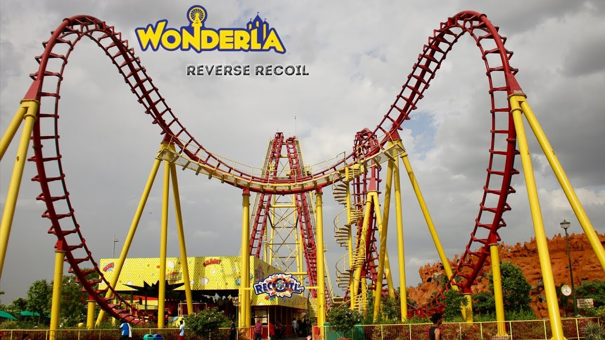
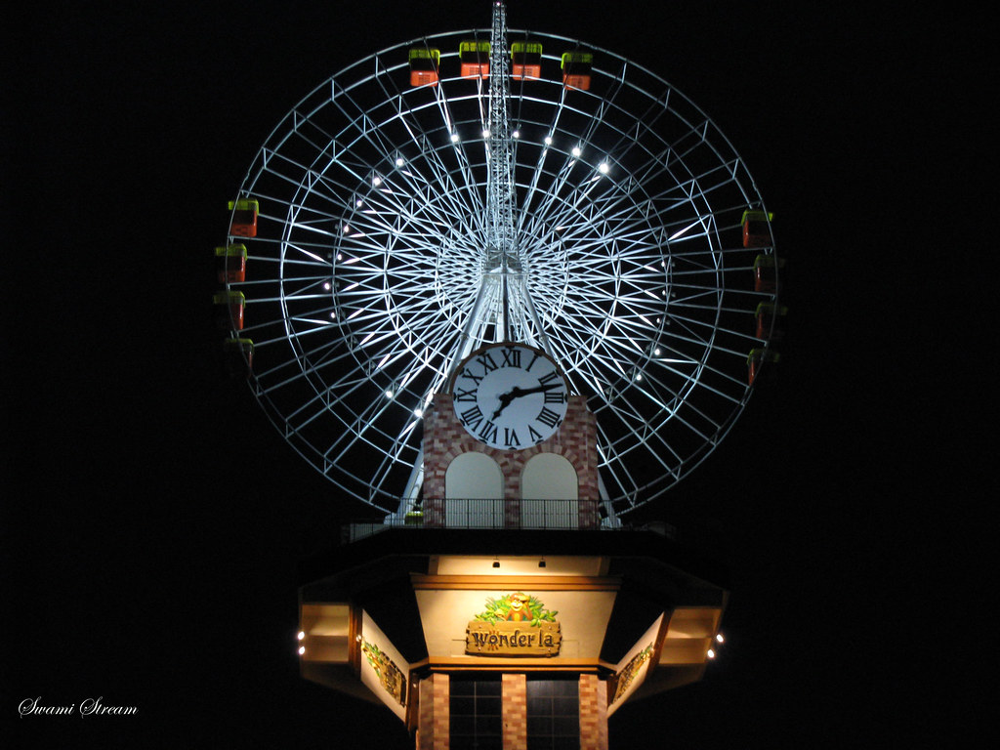
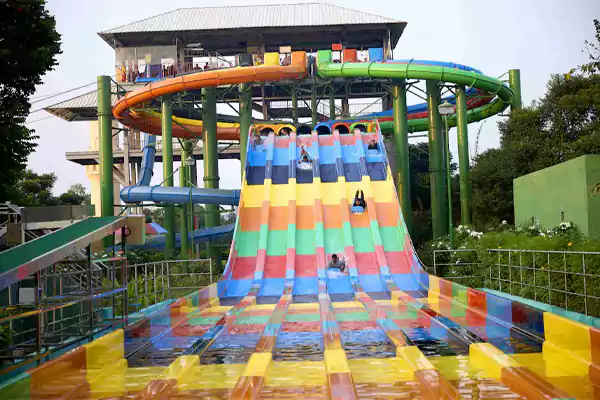

The Recoil at Wonderla isn’t just a roller coaster—it’s a dare whispered to the wind. Standing tall at forty meters, its steel frame gleams under the sun like the spine of some mechanical dragon. The moment you’re strapped in, the world narrows to the hum of the track beneath you and the pounding of your own heart. Then, without warning, you’re hurled forward—zero to eighty kilometers per hour in a single breath. Loops twist above you, the sky and earth swapping places in a dizzying dance, and just when you think you’ve conquered it, the ride does the unthinkable—it runs in reverse. Every scream, every rush of wind, every heartbeat is replayed backward, as if time itself has been tricked. When you finally step off, legs trembling, you realize it wasn’t just a ride—it was a brief, beautiful rebellion against gravity and fear.

A Ferris wheel (also called a big wheel, giant wheel or an observation wheel) is an amusement ride consisting of a rotating upright wheel with multiple passenger-carrying components (commonly referred to as passenger cars, cabins, tubs, gondolas, capsules, or pods) attached to the rim in such a way that as the wheel turns, they are kept upright, usually by gravity. Some of the largest modern Ferris wheels have cars mounted on the outside of the rim, with electric motors to independently rotate each car to keep it upright.

High-Speed Slides: These are designed for thrill-seekers and often feature steep drops and sharp turns. Examples include the Master Blaster at Alton Towers Waterpark and the Torrent slide at The Wave in Coventry, where riders experience a rush of speed and excitement.